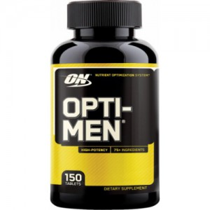

Optimum Nutrition Opti-Men

- Описание товара:
- Opti-Men — это не просто мульти витаминная добавка. Это комплекс пяти эффективных комплексов.
- Подробное описание товара:
- Витаминно-минеральный комплекс для мужчин! Продукт обладает общеукрепляющим действием, активизирует обмен веществ, повышает иммунитет, стимулирует умственные, физические и сексуальные возможности мужчины, улучшает качество жизни.
- Он состоит из пяти принципиально разных частей:
- Amino — смесь из 8 аминокислот (в том числе L-аргинин, L-глютамин и BCAA) для лучшего роста мышц и их восстановления.
- Viri — смесь, содержащая 8 экзотических трав и водорослей, для увеличения мужской силы.
- Phyto — смесь 20 различных концентратов фруктов и овощей, богатых антиоксидантами, для борьбы со свободными радирадикалами.
- Enzy — смесь из 4 энзимов для лучшего усвоения и абсоpбции.
- Opti — смесь из 25 витаминов и минералов.
- Состав на порцию « (3 таб.) продукта:» :
- Витамин А (CaroCare® натуральная смесь каротиноидов) – 10000 МЕ
- Витамин С (аскорбиновая кислота) – 300 мг
- Витамин D (холекальциферол) – 300 МЕ
- Витамин Е (ди-альфа токоферил сукцинат) – 200 МЕ
- Витамин К (фитонадион) – 75 мкг
- Тиамин (тиамин гидрохлорид) – 75 мг
- Рибофлавин – 75 мг
- Ниацин (ниацинамид) – 75 мг
- Витамин В6 (пиридоксин гидрохлорид) – 50 мг
- Фолиевая кислота – 600 мкг
- Витамин В12 (цианокобаламин) – 100 мкг
- Биотин – 300 мкг
- Пантотеновая кислота (ди-кальций пантотенат) – 75 мг
- Кальций (карбонат, цитрат кальция) – 200 мг
- Йод (kelp) – 150 мкг
- Магний (оксид, аспартат магния) – 100 мг
- Цинк (цитрат цинка) – 30 мг
- Селен (селенометионин) – 200 мкг
- Медь (глюконат меди) – 2 мг
- Марганец (глюконат марганца) – 5 мг
- Хром (хром GTF) – 120 мкг
- Молибден (молибден A.A. хелат) – 80 мкг
- Amino – 800 мг
- L-аргинин
- L-глютамин
- L-валин
- L-лейцин
- L-изолейцин
- L-цистин
- L-лизин
- L-треонин
- Viri – 525 мг
- Saw Palmetto (ягоды)
- Damiana (листья)
- корейский женьшень (корень)
- pygeum africanum (кора),
- ginkgo biloba (листья),
- raw oyster concentrate
- nettles (листья)
- pumpkin seed
- Phyto – 240 мг
- Цитрусовые биофлавоноиды (плод)
- deodorized garlic
- зеленый чай
- экстракт виноградного семени (Vitis vinifera) (семя) (стандартизован под содержание 95% полифенолов)
- blueberry powder
- cranbarry powder
- wild yam powder
- carrot powder
- papaya powder
- orange fruit powder
- pineapple powder
- spinach powder
- elderberry fruit powder
- bilberry fruit powder
- black currant fruit powder
- cauliflower powder
- kale powder
- brussels sprouts powder
- broccoli powder
- apple fruit powder
- kiwi fruit powder
- grapefruit powder
- Enzy – 50 мг
- Папаин
- бромелаин
- альфа амилаза
- липаза
- Альфа липоевая кислота – 25 мг
- PABA (парааминобензойная кислота) – 10 мг
- Холин (холин битартрат) – 10 мг
- Инозитол – 10 мг
- Диоксид кремния – 5 мг
- Бор – 2 мг
- Ликопен (Lyc-O-Mato® natural tomato lycopene) – 500 мкг
- Лютеин – 500 мкг
- Альфа каротин – 140 мкг
- Ванадий – 100 мкг
- Криптоксантин – 34 мкг
- Зеаксантин – 28 мкг
- Рекомендации по применению Optimum Nutrition Opti-Men:
- Принимайте по одной таблетке после утреннего, дневного и вечернего приема пищи.